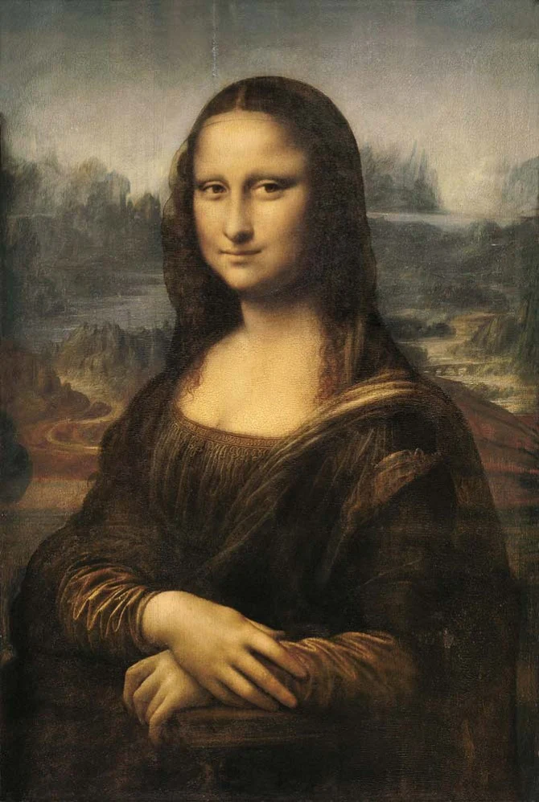
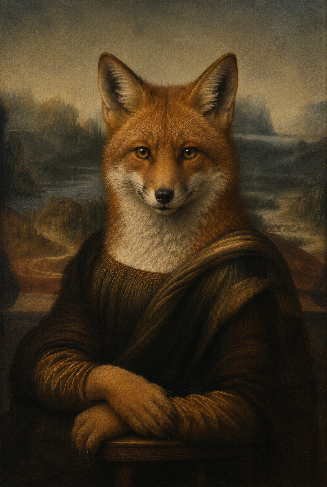

La Joconde est un tableau peint par Léonard de Vinci en 1503. Il représente une femme assise qui regarde le spectateur avec un petit sourire. A l'arrière plan, on voit un paysage avec des montagnes et des chemins. Les couleurs sont douces et le visage est réaliste. Ce tableau est aujourd'hui exposé au Musée du Louvre et est l'une des oeuvres les plus visitées du monde.

Dans ce tableau le renard prend la place de la femme de la Joconde pour attirer l'attention des visiteurs. Comme beaucoups de personnes viennent voir cette oeuvre célèbre, le renard devient le centre de l'attention afin de montere qu'il existe aussi et qu'il est important lui aussi. Son regard sur nous, nous rappelle que les renards sont des animaux sauvages qui ont besoins d'etre protégés et respectés par les Homme pour continuer a pouvoir vivre dans la natures.